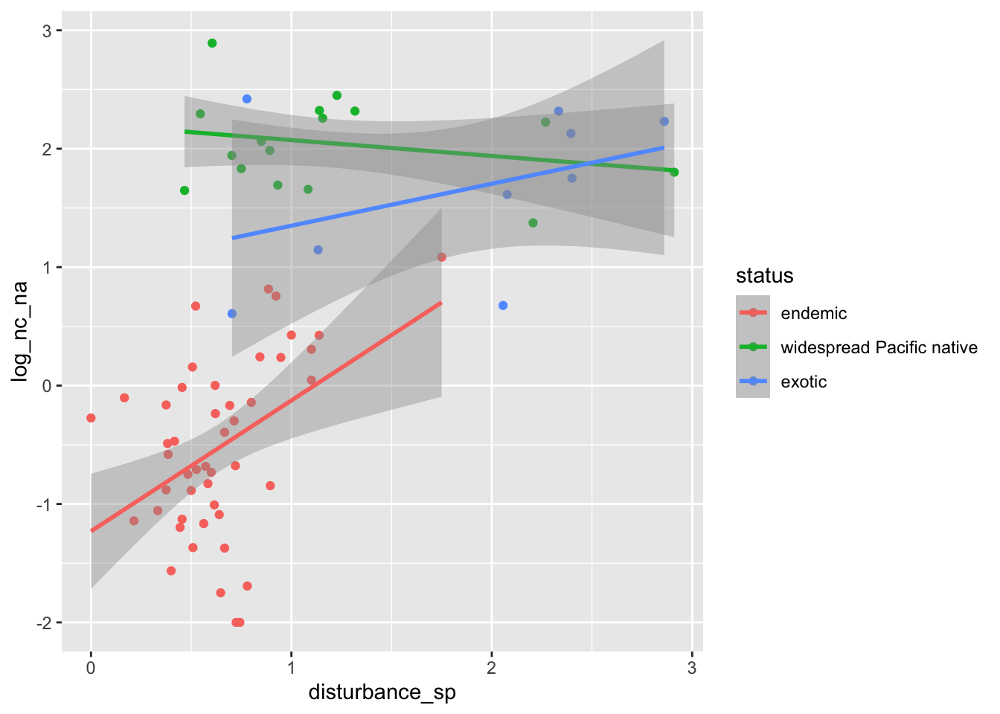
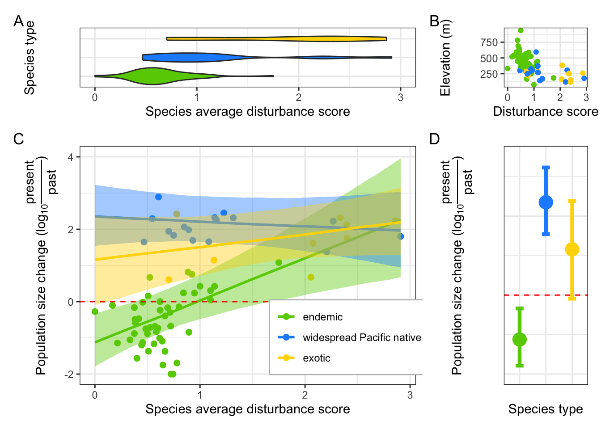

library(tidyverse)
library(brms)
library(MCMCglmm)
library(tidybayes)
library(patchwork)
mycolors <- c("chartreuse3", "dodgerblue1", "gold")Figure 3
# import species-level ecological data
grouped <- read_csv("data/species.csv") %>%
select(sp_beast2, status, disturbance_sp = `mean disturbance`, elevation_sp = `mean elev`) %>%
mutate(disturbance_sp = 5 - disturbance_sp) Rows: 72 Columns: 13
── Column specification ────────────────────────────────────────────────────────
Delimiter: ","
chr (4): sp, sp_beast2, best_model, status
dbl (9): status2, t_real, Na, Nc, mean disturbance, mean elev, population de...
ℹ Use `spec()` to retrieve the full column specification for this data.
ℹ Specify the column types or set `show_col_types = FALSE` to quiet this message.# import data on population size changes
dat <- read_csv("data/population.csv") %>% mutate(log_nc_na = log10(nc/na)) %>%
left_join(grouped)Rows: 237 Columns: 13
── Column specification ────────────────────────────────────────────────────────
Delimiter: ","
chr (5): sp, sp_beast2, pop, model, status1
dbl (8): Disturbance, Elevation, Latitude, Longitude, status2, T_real, na, nc
ℹ Use `spec()` to retrieve the full column specification for this data.
ℹ Specify the column types or set `show_col_types = FALSE` to quiet this message.
Joining with `by = join_by(sp_beast2)`dat$status <- factor(dat$status, levels=c("endemic", "widespread Pacific native", 'exotic'))
# average population size changes to species level
dat_grouped <- dat %>% group_by(sp_beast2) %>% summarise(log_nc_na = mean(log_nc_na), disturbance_sp = disturbance_sp[1], elevation_sp = elevation_sp[1], status = status[1] )
dat_grouped %>% ggplot(aes(disturbance_sp, log_nc_na, color = status)) + geom_point() + stat_smooth(method = "lm")`geom_smooth()` using formula = 'y ~ x'
Helper functions for tree calibration
calTree <- function(tree, taxa) { # remove taxa not found in sp_beast2 and calibrate the tree
tree <- drop.tip(tree, setdiff(tree$tip.label, taxa))
root_node <- c("Proceratium.relictum_EGP0091C09_Fiji", "Hypoponera.eutrepta_EGP0093B09_Fiji", "Hypoponera.monticola_EGP0094C04_Fiji", "Leptogenys.FJE02_EGP0095E10_Fiji", "Leptogenys.letilae_EGP0095D08_Fiji", "Leptogenys.FJE05_EGP0096A07_Fiji", "Leptogenys.fjn02_EGP0095E11_Fiji", "Leptogenys.fjn01_EGP0095F08_Fiji", "Odontomachus.angulatus_EGP0096C03_Fiji", "Odontomachus.simillimus_EGP0098D03_Fiji", "Anochetus.graeffei_EGP0091H05_Fiji", "Pseudoponera.stigma_EGP0099C08_Fiji")
tree <- root(tree, outgroup = root_node, resolve.root = TRUE)
node <- c(
getMRCA(tree, tip = c("Pheidole.roosevelti_EGP0016D06_Fiji","Rogeria.stigmatica_EGP0035C04_Fiji") ), # Myrmicinae: 51-72 MY
getMRCA(tree, tip = c("Paraparatrechina.oceanica_EGP0138A07_Fiji","Colobopsis.vitiensis_EGP0060A03_Fiji") ), #Formicinae: 51-71 MY
getMRCA(tree, tip = c("Hypoponera.eutrepta_EGP0093B09_Fiji","Pseudoponera.stigma_EGP0099C08_Fiji") ) # Ponerinae: 61-84 MY
)
age.min <- c(51,51,61)
age.max <- c(72,71,84)
soft.bounds <- c(FALSE,FALSE,FALSE)
mycalibration <- data.frame(node, age.min, age.max, soft.bounds)
tree <- chronos(tree, lambda = 1, model = "relaxed", calibration = mycalibration, control = chronos.control() )
return(tree)
}tree_files <- list.files("data/100bootstrap_Fijian_all_specimens", pattern = "Fijian_ants_bootstrap_Tree_\\d{2}\\.tre", full.names = TRUE)
phylo <- calTree(ape::read.tree(tree_files[1]), dat$sp_beast2)
A <- ape::vcv.phylo(phylo)
model <- brm(
log_nc_na ~ (disturbance_sp + elevation_sp) * status + (1|gr(sp_beast2, cov = A)) ,
data = dat_grouped,
data2 = list(A = A),
family = gaussian(),
prior = c(
prior(normal(0,10), "b"),
prior(normal(0,50), "Intercept"),
prior(student_t(3,0,20), "sd"),
prior(student_t(3,0,20), "sigma")
),
control = list(adapt_delta = 0.99, max_treedepth = 15),
sample_prior = TRUE, chains = 2, cores = 2,
iter = 4000, warmup = 2000
)
for (file in tree_files[-1]) {
phylo <- calTree(ape::read.tree(file), dat$sp_beast2)
A <- ape::vcv.phylo(phylo)
model <- update(model, newdata = dat_grouped, data2 = list(A = A), recompile = FALSE)
}There are no elevation effects, so we remove them
summary(model, digits = 3) Family: gaussian
Links: mu = identity; sigma = identity
Formula: log_nc_na ~ (disturbance_sp + elevation_sp) * status + (1 | gr(sp_beast2, cov = A))
Data: dat_grouped (Number of observations: 72)
Draws: 2 chains, each with iter = 4000; warmup = 2000; thin = 1;
total post-warmup draws = 4000
Multilevel Hyperparameters:
~sp_beast2 (Number of levels: 72)
Estimate Est.Error l-95% CI u-95% CI Rhat Bulk_ESS Tail_ESS
sd(Intercept) 0.02 0.01 0.00 0.04 1.00 868 1558
Regression Coefficients:
Estimate Est.Error l-95% CI
Intercept -1.26 0.60 -2.39
disturbance_sp 1.21 0.39 0.43
elevation_sp 0.00 0.00 -0.00
statuswidespreadPacificnative 3.84 0.88 2.10
statusexotic 2.51 1.12 0.29
disturbance_sp:statuswidespreadPacificnative -1.38 0.48 -2.33
disturbance_sp:statusexotic -0.86 0.50 -1.84
elevation_sp:statuswidespreadPacificnative -0.00 0.00 -0.00
elevation_sp:statusexotic -0.00 0.00 -0.01
u-95% CI Rhat Bulk_ESS Tail_ESS
Intercept -0.03 1.00 3295 2888
disturbance_sp 1.99 1.00 3564 3081
elevation_sp 0.00 1.00 4179 3579
statuswidespreadPacificnative 5.57 1.00 5032 2931
statusexotic 4.64 1.00 4688 2745
disturbance_sp:statuswidespreadPacificnative -0.45 1.00 3712 2745
disturbance_sp:statusexotic 0.14 1.00 3425 2926
elevation_sp:statuswidespreadPacificnative 0.00 1.00 5595 3459
elevation_sp:statusexotic 0.00 1.00 5970 3316
Further Distributional Parameters:
Estimate Est.Error l-95% CI u-95% CI Rhat Bulk_ESS Tail_ESS
sigma 0.63 0.06 0.52 0.77 1.00 2836 2918
Draws were sampled using sampling(NUTS). For each parameter, Bulk_ESS
and Tail_ESS are effective sample size measures, and Rhat is the potential
scale reduction factor on split chains (at convergence, Rhat = 1).model2 <- update(model, . ~ . -elevation_sp - elevation_sp:status)Start sampling
SAMPLING FOR MODEL 'anon_model' NOW (CHAIN 1).
Chain 1:
Chain 1: Gradient evaluation took 5.4e-05 seconds
Chain 1: 1000 transitions using 10 leapfrog steps per transition would take 0.54 seconds.
Chain 1: Adjust your expectations accordingly!
Chain 1:
Chain 1:
Chain 1: Iteration: 1 / 4000 [ 0%] (Warmup)
Chain 1: Iteration: 400 / 4000 [ 10%] (Warmup)
Chain 1: Iteration: 800 / 4000 [ 20%] (Warmup)
Chain 1: Iteration: 1200 / 4000 [ 30%] (Warmup)
Chain 1: Iteration: 1600 / 4000 [ 40%] (Warmup)
Chain 1: Iteration: 2000 / 4000 [ 50%] (Warmup)
Chain 1: Iteration: 2001 / 4000 [ 50%] (Sampling)
Chain 1: Iteration: 2400 / 4000 [ 60%] (Sampling)
Chain 1: Iteration: 2800 / 4000 [ 70%] (Sampling)
Chain 1: Iteration: 3200 / 4000 [ 80%] (Sampling)
Chain 1: Iteration: 3600 / 4000 [ 90%] (Sampling)
Chain 1: Iteration: 4000 / 4000 [100%] (Sampling)
Chain 1:
Chain 1: Elapsed Time: 1.864 seconds (Warm-up)
Chain 1: 0.923 seconds (Sampling)
Chain 1: 2.787 seconds (Total)
Chain 1:
SAMPLING FOR MODEL 'anon_model' NOW (CHAIN 2).
Chain 2:
Chain 2: Gradient evaluation took 1.5e-05 seconds
Chain 2: 1000 transitions using 10 leapfrog steps per transition would take 0.15 seconds.
Chain 2: Adjust your expectations accordingly!
Chain 2:
Chain 2:
Chain 2: Iteration: 1 / 4000 [ 0%] (Warmup)
Chain 2: Iteration: 400 / 4000 [ 10%] (Warmup)
Chain 2: Iteration: 800 / 4000 [ 20%] (Warmup)
Chain 2: Iteration: 1200 / 4000 [ 30%] (Warmup)
Chain 2: Iteration: 1600 / 4000 [ 40%] (Warmup)
Chain 2: Iteration: 2000 / 4000 [ 50%] (Warmup)
Chain 2: Iteration: 2001 / 4000 [ 50%] (Sampling)
Chain 2: Iteration: 2400 / 4000 [ 60%] (Sampling)
Chain 2: Iteration: 2800 / 4000 [ 70%] (Sampling)
Chain 2: Iteration: 3200 / 4000 [ 80%] (Sampling)
Chain 2: Iteration: 3600 / 4000 [ 90%] (Sampling)
Chain 2: Iteration: 4000 / 4000 [100%] (Sampling)
Chain 2:
Chain 2: Elapsed Time: 1.58 seconds (Warm-up)
Chain 2: 1.75 seconds (Sampling)
Chain 2: 3.33 seconds (Total)
Chain 2: summary(model2) Family: gaussian
Links: mu = identity; sigma = identity
Formula: log_nc_na ~ disturbance_sp + status + (1 | gr(sp_beast2, cov = A)) + disturbance_sp:status
Data: dat_grouped (Number of observations: 72)
Draws: 2 chains, each with iter = 4000; warmup = 2000; thin = 1;
total post-warmup draws = 4000
Multilevel Hyperparameters:
~sp_beast2 (Number of levels: 72)
Estimate Est.Error l-95% CI u-95% CI Rhat Bulk_ESS Tail_ESS
sd(Intercept) 0.02 0.01 0.00 0.04 1.00 876 944
Regression Coefficients:
Estimate Est.Error l-95% CI
Intercept -1.10 0.37 -1.79
disturbance_sp 1.16 0.35 0.48
statuswidespreadPacificnative 3.46 0.40 2.67
statusexotic 2.26 0.62 1.02
disturbance_sp:statuswidespreadPacificnative -1.29 0.43 -2.11
disturbance_sp:statusexotic -0.80 0.46 -1.71
u-95% CI Rhat Bulk_ESS Tail_ESS
Intercept -0.34 1.00 1633 1846
disturbance_sp 1.87 1.00 1632 2275
statuswidespreadPacificnative 4.22 1.00 1844 2827
statusexotic 3.46 1.00 2662 3076
disturbance_sp:statuswidespreadPacificnative -0.42 1.00 1524 2326
disturbance_sp:statusexotic 0.12 1.00 1718 2420
Further Distributional Parameters:
Estimate Est.Error l-95% CI u-95% CI Rhat Bulk_ESS Tail_ESS
sigma 0.61 0.06 0.51 0.74 1.00 2220 2699
Draws were sampled using sampling(NUTS). For each parameter, Bulk_ESS
and Tail_ESS are effective sample size measures, and Rhat is the potential
scale reduction factor on split chains (at convergence, Rhat = 1).bayes_R2(model2) Estimate Est.Error Q2.5 Q97.5
R2 0.8049251 0.02565367 0.7466164 0.8482723hyp <- "sd_sp_beast2__Intercept^2 / (sd_sp_beast2__Intercept^2 + sigma^2) = 0"
(hyp <- hypothesis(model2, hyp, class = NULL))Hypothesis Tests for class :
Hypothesis Estimate Est.Error CI.Lower CI.Upper Evid.Ratio
1 (sd_sp_beast2__In... = 0 0 0 0 0 471.47
Post.Prob Star
1 1 *
---
'CI': 90%-CI for one-sided and 95%-CI for two-sided hypotheses.
'*': For one-sided hypotheses, the posterior probability exceeds 95%;
for two-sided hypotheses, the value tested against lies outside the 95%-CI.
Posterior probabilities of point hypotheses assume equal prior probabilities.bayes_R2(model2) Estimate Est.Error Q2.5 Q97.5
R2 0.8049251 0.02565367 0.7466164 0.8482723There is no phylogenetic signal
Generating the summary figure
ce <- conditional_effects(model2, "disturbance_sp:status")
ce2 <- conditional_effects(model2, "status", conditions = list(disturbance_sp = 0)) # compute marginal effects for species in the primary forest
p_main <-
plot(ce, plot = FALSE, points = T)[[1]] + scale_fill_manual(values = mycolors) +
geom_ribbon(aes(ymin = lower__, ymax = upper__, fill = status), alpha = 0.01, colour = NA) +
labs(x = "Species average disturbance score", y = expression(paste("Population size change (", log[10], frac("present","past"),")"))) +
scale_color_manual(values=mycolors) +
theme_bw() +
geom_hline(yintercept = 0, color = "red", linetype = "dashed") +
guides(color = "none") +
theme(legend.position = c(.8, .2), legend.title = element_blank(), legend.background = element_rect(colour="grey", size=0.5, linetype="solid") ) +
guides(color = guide_legend(override.aes = list(fill = NA))) +
ylim(-2, 4) Warning: The `size` argument of `element_rect()` is deprecated as of ggplot2 3.4.0.
ℹ Please use the `linewidth` argument instead.Warning: A numeric `legend.position` argument in `theme()` was deprecated in ggplot2
3.5.0.
ℹ Please use the `legend.position.inside` argument of `theme()` instead.# Plot posterior distributions
name_map <- c("b_Intercept" = "endemic",
"b_statuswidespreadPacificnative" = "widespread Pacific Native",
"b_statusexotic" = "exotic")
p_marg <- ggplot(ce2[[1]], aes(status, estimate__, color = status)) + geom_point(size=5) + geom_errorbar(aes(ymin=lower__, ymax=upper__), width=0.3, size=1.5) + theme_bw() + theme(legend.position = "none", axis.text = element_blank(), axis.ticks = element_blank()) + scale_color_manual(values = mycolors) + geom_hline(yintercept = 0, color = "red", linetype = "dashed") + ylim(-2,3.5) + xlab("Species type") + ylab(expression(paste("Population size change (", log[10], frac("present","past"),")")))Warning: Using `size` aesthetic for lines was deprecated in ggplot2 3.4.0.
ℹ Please use `linewidth` instead.p_marg_boxplot <- dat_grouped %>%
ggplot(aes(x = status, y = disturbance_sp, fill=status)) + ylim(0,3) +
geom_violin() +
coord_flip() +
theme_bw() + scale_fill_manual(values = mycolors) +
theme(legend.position = "none", axis.text.y = element_blank(),
axis.ticks.y = element_blank())+ ylab("Species average disturbance score") + xlab("Species type")
layout <- plot_layout(
ncol = 2,
nrow = 2,
heights = c(1, 4),
widths = c(4, 1),
)
p_elevation <- dat %>% ggplot(aes(disturbance_sp, elevation_sp, color = status)) + geom_point() +theme_bw() + scale_color_manual(values=mycolors) + theme(legend.position = "none") + xlab("Disturbance score") + ylab("Elevation (m)")
empty_plot <- ggplot() +
geom_blank() +
theme_void()
p_marg_boxplot + p_elevation + p_main + p_marg + layout + plot_annotation(tag_levels = 'A')
# ggsave("bayesian regression.pdf", height=7, width=11)